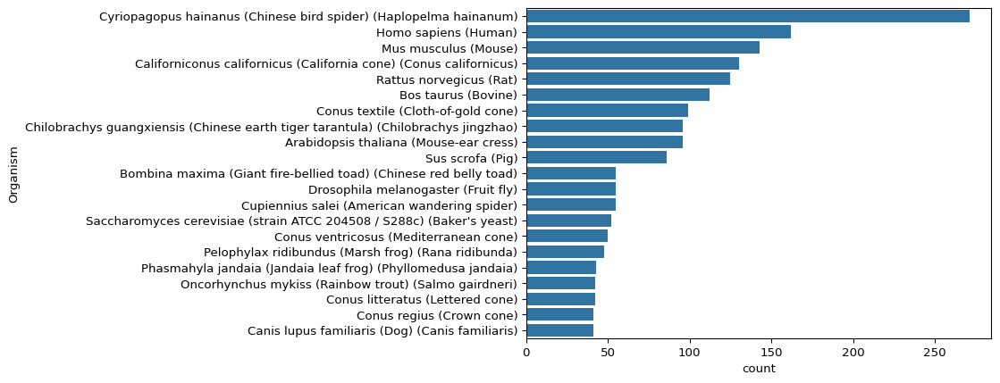
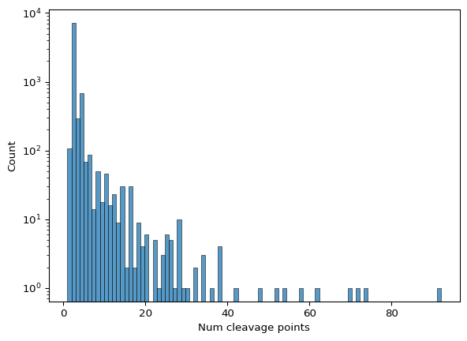

import pandas as pd
def process_peptide(sentence: str) -> str:
"""
Process Peptide string and output start and end points
for a given peptide
"""
frags = sentence.split(";")
frags = [f.replace("PEPTIDE ", "").replace("..", "-")
for f in frags if "PEPTIDE" in f]
return ";".join(frags)
df = pd.read_csv("../data/swissprot-peptide.tsv", sep='\t')
df = df[['Entry', "Organism", "Length", "Peptide", "Sequence"]]
df["Peptide"] = df["Peptide"].map(process_peptide)
df.to_csv("../processed-data/peptide.tsv", sep='\t', index=False)PeptideLocator data preparation
1 Introduction
The updated version of PeptideLocator will combine two different predictors:
- Cleavage site predictor: It will identify as positives those residues that are either
stivatetartORendof aPEPTIDEaccording to the UniProtKB definition. - Belonging to peptide predictor: It will identify those residues that belong to a
PEPTIDE. We define the residues that belong to a peptide as those residues between astartorendposition.
2 Materials and methods
2.1 Data collection
Data was gathered on 26/03/2026 from the UniProtKB with the following query:
https://www.uniprot.org/uniprotkb?query=*&facets=reviewed%3Atrue%2Cproteins_with%3A41which looks for:
- all proteins
- that have been “Reviewed” (Swiss-Prot)
- with a “Peptide”
2.2 Data preprocessing
2.2.1 Cleavage sites
Some entries have the indication “<1”, we have assumed them to be starting point 1. Some entries have the symbol “?” before any of the cleavage points, we have removed the whole protein. Entries with the symbol “>” we have kept, but ignored the cleavage point so indicated. Some entries are marked with “->” instead of the separator “-”, we have treated them as if they had the standard separator (“-”).
We also remove proteins with length greater than 1,024
from typing import List
import numpy as np
def _clean_sites(sites: List[str]) -> List[str]:
to_remove, to_add = set(), set()
for s in sites:
if ';' in s:
to_remove.add(s)
for subs in s.split(";"):
to_add.add(subs)
if "<1" in s:
to_remove.add(s)
to_add.add("1")
elif ">" in s:
to_remove.add(s)
if "?" in s:
return "Invalid"
if len(to_remove) == 0:
return sites
for e in to_remove:
sites.remove(e)
for e in to_add:
sites.append(e)
return _clean_sites(sites)
def find_cleavage_sites(sentence: str) -> List[int]:
"""
Process the Peptide string to obtain the indices
of the cleavage points
"""
sites = [s for s in sentence.split("-")]
sites = _clean_sites(sites)
if 'Invalid' in sites:
return 'Invalid'
sites = set(sites)
sites = [int(s) for s in sites]
return sorted(sites)
def cleavage_mask(sites: List[int], sequence: str) -> List[int]:
""""
Guided by the indices in the list of cleavage points create a mask
where there is a "1" for residues with a cleavage point and a 0
for all the rest
"""
mask = np.zeros(len(sequence))
for s in sites:
mask[s-1] = 1
return mask
df["Cleavage points"] = df["Peptide"].map(find_cleavage_sites)
invalid_entries = len(df[df['Cleavage points'] == 'Invalid'])
print(f"There are {invalid_entries:,} invalid entries")
df = df[df['Cleavage points'] != 'Invalid']
df['Cleavage mask'] = df.apply(
lambda x:
cleavage_mask(x['Cleavage points'], x['Sequence']),
axis=1
)
long_seqs = len(df[df['Sequence'].map(len) > 1022])
df = df[df['Sequence'].map(len) <= 1022]
df['Num cleavage points'] = df['Cleavage mask'].map(sum)
print(f"There are {long_seqs:,} that were removed for being too long")There are 47 invalid entries
There are 138 that were removed for being too long3 Results
3.1 Exploratory data analysis
print(f"There are: {len(df):,} entries in the dataset.")
df.head(5)There are: 8,725 entries in the dataset.| Entry | Organism | Length | Peptide | Sequence | Cleavage points | Cleavage mask | Num cleavage points | |
|---|---|---|---|---|---|---|---|---|
| 1 | A0A068B6Q6 | Conus betulinus (Beech cone) | 37 | 21-36 | PDGRNAAAKAFDLITPTVRKGCCSNPACILNNPNQCG | [21, 36] | [0.0, 0.0, 0.0, 0.0, 0.0, 0.0, 0.0, 0.0, 0.0, ... | 2.0 |
| 2 | A0A088MIT0 | Physalaemus nattereri (Cuyaba dwarf frog) (Eup... | 134 | 47-56; 59-70; 85-96; 124-134; 124-132; 124-131 | MAFLKKSLFLVLFLGVVSLSFCEEEKREEHEEEKRDEEDAESLGKR... | [47, 56, 59, 70, 85, 96, 124, 131, 132, 134] | [0.0, 0.0, 0.0, 0.0, 0.0, 0.0, 0.0, 0.0, 0.0, ... | 10.0 |
| 3 | A0A0A1I6E7 | Androctonus crassicauda (Arabian fat-tailed sc... | 74 | 23-40 | MEIKYLLTVFLVLLIVSDHCQAFLFSLIPHAISGLISAFKGRRKRD... | [23, 40] | [0.0, 0.0, 0.0, 0.0, 0.0, 0.0, 0.0, 0.0, 0.0, ... | 2.0 |
| 4 | A0A0A1I6N9 | Androctonus crassicauda (Arabian fat-tailed sc... | 74 | 23-40 | MEIKYLLTVFLVLLIVSDHCQAFLFSLIPNAISGLLSAFKGRRKRN... | [23, 40] | [0.0, 0.0, 0.0, 0.0, 0.0, 0.0, 0.0, 0.0, 0.0, ... | 2.0 |
| 5 | A0A0B5A8P4 | Conus geographus (Geography cone) (Nubecula ge... | 113 | 30-51; 93-113 | MTTSFYFLLVALGLLLYVCQSSFGNQHTRNSDTPKHRCGSELADQY... | [30, 51, 93, 113] | [0.0, 0.0, 0.0, 0.0, 0.0, 0.0, 0.0, 0.0, 0.0, ... | 4.0 |
import seaborn as sns
import matplotlib.pyplot as plt
counts = df['Organism'].value_counts()
filtered_counts = counts[counts > 40]
filtered_df = df[df['Organism'].isin(filtered_counts.index)]
sns.countplot(
data=filtered_df,
y='Organism',
order=filtered_counts.index
)
sns.histplot(
df,
x="Num cleavage points",
bins=int(df['Num cleavage points'].max())
)
plt.yscale('log')
print(f"Dataset contains: {int(df['Num cleavage points'].sum()):,} individual cleavage points")Dataset contains: 23,769 individual cleavage points
3.2 Cleavage predictor model results
A RandomForestClassifier with default hyperparameters was trained with the 5x5-fold cross-validation strategy for evaluation with train-test partitions created with CCPart and MMSeqs2 (Smith-Waterman) with prefiltering step and maximum similarity ().
The resulting models show the following performance metrics:
import pandas as pd
results_df = pd.read_csv("../results/results-cleavage-site-predictor-1.csv")
# Select numeric columns
numeric_cols = results_df.select_dtypes(include='number').columns
# Compute mean row
mean_row = results_df[numeric_cols].mean().to_frame().T
# Label non-numeric columns
for col in results_df.columns:
if col not in numeric_cols:
mean_row[col] = "mean"
# Append
results_df = pd.concat([results_df, mean_row], ignore_index=True)
# Highlight the last row (mean row)
def highlight_mean(row):
if row.name == len(results_df) - 1:
return ['background-color: lightyellow; font-weight: bold'] * len(row)
return [''] * len(row)
styled_df = (
results_df.style
.apply(highlight_mean, axis=1)
.format({col: "{:.3f}" for col in numeric_cols})
)
styled_df| task | accuracy | balanced_accuracy | mcc | precision_macro | recall_macro | f1_macro | precision_weighted | recall_weighted | f1_weighted | log_loss | roc_auc | fold | seed | |
|---|---|---|---|---|---|---|---|---|---|---|---|---|---|---|
| 0 | classification | 0.978 | 0.658 | 0.549 | 0.978 | 0.658 | 0.733 | 0.978 | 0.978 | 0.973 | 0.085 | 0.940 | 0.000 | 0.000 |
| 1 | classification | 0.979 | 0.659 | 0.551 | 0.977 | 0.659 | 0.735 | 0.979 | 0.979 | 0.973 | 0.081 | 0.952 | 1.000 | 0.000 |
| 2 | classification | 0.980 | 0.663 | 0.557 | 0.975 | 0.663 | 0.740 | 0.980 | 0.980 | 0.976 | 0.073 | 0.953 | 2.000 | 0.000 |
| 3 | classification | 0.979 | 0.656 | 0.544 | 0.976 | 0.656 | 0.731 | 0.979 | 0.979 | 0.974 | 0.082 | 0.946 | 3.000 | 0.000 |
| 4 | classification | 0.979 | 0.667 | 0.565 | 0.977 | 0.667 | 0.744 | 0.979 | 0.979 | 0.974 | 0.078 | 0.950 | 4.000 | 0.000 |
| 5 | classification | 0.978 | 0.657 | 0.546 | 0.976 | 0.657 | 0.732 | 0.978 | 0.978 | 0.973 | 0.085 | 0.941 | 0.000 | 1.000 |
| 6 | classification | 0.979 | 0.661 | 0.554 | 0.978 | 0.661 | 0.736 | 0.979 | 0.979 | 0.974 | 0.079 | 0.951 | 1.000 | 1.000 |
| 7 | classification | 0.980 | 0.662 | 0.554 | 0.975 | 0.662 | 0.738 | 0.980 | 0.980 | 0.976 | 0.077 | 0.950 | 2.000 | 1.000 |
| 8 | classification | 0.979 | 0.654 | 0.541 | 0.976 | 0.654 | 0.728 | 0.979 | 0.979 | 0.973 | 0.085 | 0.942 | 3.000 | 1.000 |
| 9 | classification | 0.979 | 0.668 | 0.565 | 0.975 | 0.668 | 0.745 | 0.979 | 0.979 | 0.974 | 0.079 | 0.948 | 4.000 | 1.000 |
| 10 | classification | 0.978 | 0.657 | 0.548 | 0.977 | 0.657 | 0.733 | 0.978 | 0.978 | 0.973 | 0.082 | 0.945 | 0.000 | 2.000 |
| 11 | classification | 0.979 | 0.662 | 0.556 | 0.978 | 0.662 | 0.738 | 0.979 | 0.979 | 0.974 | 0.077 | 0.955 | 1.000 | 2.000 |
| 12 | classification | 0.980 | 0.661 | 0.553 | 0.975 | 0.661 | 0.737 | 0.980 | 0.980 | 0.976 | 0.072 | 0.955 | 2.000 | 2.000 |
| 13 | classification | 0.979 | 0.654 | 0.543 | 0.977 | 0.654 | 0.729 | 0.979 | 0.979 | 0.974 | 0.084 | 0.941 | 3.000 | 2.000 |
| 14 | classification | 0.979 | 0.667 | 0.565 | 0.977 | 0.667 | 0.744 | 0.979 | 0.979 | 0.974 | 0.080 | 0.948 | 4.000 | 2.000 |
| 15 | classification | 0.978 | 0.656 | 0.547 | 0.979 | 0.656 | 0.732 | 0.978 | 0.978 | 0.973 | 0.083 | 0.942 | 0.000 | 3.000 |
| 16 | classification | 0.979 | 0.659 | 0.552 | 0.978 | 0.659 | 0.735 | 0.979 | 0.979 | 0.973 | 0.080 | 0.950 | 1.000 | 3.000 |
| 17 | classification | 0.981 | 0.665 | 0.559 | 0.974 | 0.665 | 0.741 | 0.980 | 0.981 | 0.976 | 0.073 | 0.953 | 2.000 | 3.000 |
| 18 | classification | 0.979 | 0.653 | 0.540 | 0.977 | 0.653 | 0.727 | 0.979 | 0.979 | 0.973 | 0.088 | 0.941 | 3.000 | 3.000 |
| 19 | classification | 0.980 | 0.671 | 0.569 | 0.975 | 0.671 | 0.747 | 0.979 | 0.980 | 0.975 | 0.082 | 0.946 | 4.000 | 3.000 |
| 20 | classification | 0.978 | 0.656 | 0.546 | 0.977 | 0.656 | 0.732 | 0.978 | 0.978 | 0.973 | 0.087 | 0.943 | 0.000 | 4.000 |
| 21 | classification | 0.979 | 0.662 | 0.556 | 0.978 | 0.662 | 0.738 | 0.979 | 0.979 | 0.974 | 0.078 | 0.950 | 1.000 | 4.000 |
| 22 | classification | 0.980 | 0.662 | 0.554 | 0.975 | 0.662 | 0.738 | 0.980 | 0.980 | 0.976 | 0.074 | 0.952 | 2.000 | 4.000 |
| 23 | classification | 0.979 | 0.654 | 0.541 | 0.976 | 0.654 | 0.728 | 0.979 | 0.979 | 0.973 | 0.083 | 0.943 | 3.000 | 4.000 |
| 24 | classification | 0.979 | 0.669 | 0.568 | 0.978 | 0.669 | 0.746 | 0.979 | 0.979 | 0.975 | 0.079 | 0.950 | 4.000 | 4.000 |
| 25 | mean | 0.979 | 0.660 | 0.553 | 0.976 | 0.660 | 0.736 | 0.979 | 0.979 | 0.974 | 0.080 | 0.947 | 2.000 | 2.000 |